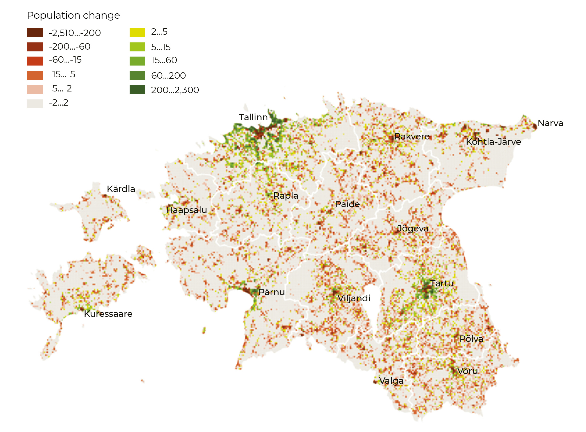
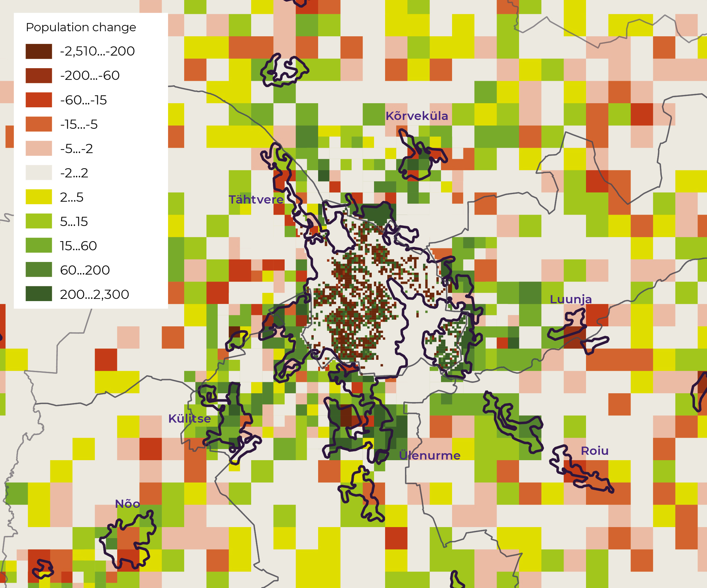

1.1 Changes in land use: distortion of the meaning of urban and rural
- Landscapes are polarised as a result of urbanisation and peripheralisation.
Land zoning and the resulting landscapes reflect the way we use our territory. Landscape – the natural and human-made environment surrounding us as we perceive it – is changing and some of the changes are irreversible. Therefore, sometimes we need to guide these changes. Historically formed landscape is intrinsic to Estonian culture; the diversity of landscapes ensures biodiversity and, at the same time, provides people with choices as to the most convenient living environment.
According to Estonian custom, both urban and agricultural or forest landscapes may be public space. The owner has the right to limit access to privately owned land but a large part of the space is actually public – everyone can go there, see it, experience it. This article asks how landscape diversity in Estonia changes over time and whether the choices we have today will also be available in the future.
Landscape – the natural and human-made environment surrounding us as we perceive it.
Land use changes may be analysed using direct spatial data (e.g. the CORINE Land Cover data) or data reflecting the use of space indirectly (e.g. the open access data provided by Statistics Estonia). CORINE is a European project which maps the land cover in different countries using standardised methods. In Estonia, CORINE has been used to map land cover in 1990, 2000, 2006, 2012 and 2018; the data is open access. Land cover means the biological or non-biological cover of the Earth’s surface, including artificial materials, agricultural plants, forests, (semi)natural areas, wetlands and waterbodies. Land cover largely reflects the impact of land use on how the Earth’s surface appears – its landscape. The CORINE data is general and does not reflect small-scale changes in land cover. Another resource for monitoring changes in land use is the data produced by Statistics Estonia. For example, the data from the last two censuses (2000 and 2011) has been presented on the basis of regular cells of one square kilometre in rural areas and one hectare in cities. To some extent, changes in land zoning are also reflected in the open access data in the Estonian Topographic Database managed by the Land Board. Land zoning changes in protected areas are reflected in the Estonian Nature Information System. The following is an attempt to analyse and explain this data.
Population decline and migration to urban regions affect landscapes
Changes in land use affect landscapes. Land use changes according to human activity and lifestyle. The first relevant factor is population loss – by 2017, the Estonian population had decreased by almost 57,000 (4.1%) compared to the turn of the century. Another factor is the movement of people within Estonia. This has led to population growth in and around the cities of Tallinn, Tartu and Pärnu, while the remaining regions (most of the country) have lost people (Figure 1.1.1).
Figure 1.1.1. Population change between the 2000 and 2011 censuses (in sq. km)

Source: Statistics Estonia censuses of 2000 and 2011.
The third factor is the change in the meaning of a rural lifestyle. According to Statistics Estonia, approximately as little as two-thirds of the population in Estonia live in municipalities formally considered urban. The majority of the municipalities formally considered rural around Tallinn, Tartu and Pärnu are urban or suburban in terms of lifestyle. In the areas around the larger cities, where thirty years ago wealthy agricultural holdings dominated (e.g. growing vegetables for the city), the first choice for employment today is not agriculture. The need for employment in agriculture has also decreased due to the ‘industrialisation’ of the sector. In Estonia as a whole, only about 1 in 40 residents is employed in agriculture in the wider sense. Accordingly, people living in rural areas are engaged in something different from traditional practices forming agricultural landscapes. All this has an impact on Estonian landscapes and therefore also the living environments.
Built-up areas are increasing mostly around cities
Most of the new residential areas replaced previous agricultural lands (12.2%). It is important to point out that the majority of residential areas (including districts of residential blocks like Mustamäe and Lasnamäe in Tallinn or Annelinn in Tartu) qualify as discontinuous urban fabric according to CORINE; all the new residential areas and areas with industrial or commercial buildings definitely form a discontinuous urban fabric. Adding other built-up areas, the total increase in artificial surfaces (as defined in CORINE) reaches 23 sq. km (Oja 2009; 2014). Between 2006 and 2012, 11 sq. km of discontinuous urban fabric was added and about the same area of industrial or commercial units. About 7.5 sq. km of it replaced agricultural land. So the increase in built-up areas was similar to the previous period.
Lands with buildings on them or nearby cannot be turned back into agricultural land
Between 2012 and 2018, the addition of built-up areas somewhat slowed. Residential areas increased by 3.65 sq. km (2.5 sq. km of which was previously agricultural land) and industrial/commercial areas increased by 5.83 sq. km (4.39 sq. km of which was previously agricultural land). The disappearance and appearance of construction sites is more or less the same, which indicates not much change in building activities.
The growth of built-up areas since the beginning of the century is not very large – approximately 1.3‰ of land area – but unlike several other changes, this process is not reversible. Lands with buildings on them or nearby cannot be turned back into agricultural land. Regionally, most of the new residential areas are located in Harjumaa, Tartumaa and Pärnumaa counties (Figure 1.1.2). This is confirmed by the population data from Statistics Estonia (see Figure 1.1.1).
Figure 1.1.2. Addition of new residential areas
## Reading layer `maakond_20200101' from data source `/Users/taavet/Documents/GitHub/EIA_2019/data/11_fig2_data/maakond_20200101.shp' using driver `ESRI Shapefile'
## Simple feature collection with 15 features and 2 fields
## geometry type: MULTIPOLYGON
## dimension: XY
## bbox: xmin: 369032.1 ymin: 6377141 xmax: 739152.8 ymax: 6634019
## projected CRS: Estonian Coordinate System of 1997## MNIMI MKOOD geometry
## 1 Viljandi maakond 0084 MULTIPOLYGON (((621049.2 64...
## 2 Hiiu maakond 0039 MULTIPOLYGON (((418045.8 65...
## 3 Harju maakond 0037 MULTIPOLYGON (((505059.9 65...
## 4 Lääne maakond 0056 MULTIPOLYGON (((460628.3 65...
## 5 Rapla maakond 0071 MULTIPOLYGON (((504136.5 65...
## 6 Lääne-Viru maakond 0060 MULTIPOLYGON (((657694.1 65...## Reading layer `change112121' from data source `/Users/taavet/Documents/GitHub/EIA_2019/data/11_fig2_data/change112121.shp' using driver `ESRI Shapefile'
## Simple feature collection with 133 features and 7 fields
## geometry type: POLYGON
## dimension: XY
## bbox: xmin: 504776.8 ymin: 6439802 xmax: 734318.4 ymax: 6607969
## projected CRS: Estonian_Coordinate_System_of_1997## OBJECTID CODE2000 CODE2006 T LABEL Shape_Leng Shape_Area
## 1 512 311 112 0 311--112 1097.992 56694.16
## 2 513 243 121 0 243--121 1730.671 194791.76
## 3 514 211 121 0 211--121 2344.610 324662.23
## 4 515 211 112 0 211--112 2604.846 316957.35
## 5 517 243 112 0 243--112 1758.969 146989.36
## 6 519 312 112 0 312--112 1087.072 66078.11
## geometry
## 1 POLYGON ((552399.4 6581318,...
## 2 POLYGON ((550696.2 6580295,...
## 3 POLYGON ((550714.7 6580305,...
## 4 POLYGON ((551070.1 6579338,...
## 5 POLYGON ((551691.7 6579786,...
## 6 POLYGON ((554571 6576292, 5...## Reading layer `lisand2012' from data source `/Users/taavet/Documents/GitHub/EIA_2019/data/11_fig2_data/lisand2012.shp' using driver `ESRI Shapefile'
## Simple feature collection with 155 features and 9 fields
## geometry type: POLYGON
## dimension: XY
## bbox: xmin: 410416.7 ymin: 6406965 xmax: 732050.3 ymax: 6599616
## projected CRS: Estonian_Coordinate_System_of_1997## Change code_06 code_12 chtype Remark ID Area_ha Shape_Leng
## 1 112-121 112 121 R <NA> EU-123 3.144086 785.6048
## 2 132-121 132 121 R <NA> EU-2648 407.489018 8010.3492
## 3 133-112 133 112 R <NA> EU-7373 8.055029 1313.4816
## 4 133-112 133 112 R <NA> EU-7374 6.332954 1166.6180
## 5 133-112 133 112 R <NA> EU-7375 25.050257 1982.6319
## 6 133-112 133 112 R <NA> EU-7378 14.799595 1681.3166
## Shape_Area geometry
## 1 31440.86 POLYGON ((553152.9 6580617,...
## 2 4074890.18 POLYGON ((731988.8 6585684,...
## 3 80550.29 POLYGON ((536492.5 6467235,...
## 4 63329.54 POLYGON ((534655.5 6471147,...
## 5 250502.57 POLYGON ((535392.7 6472044,...
## 6 147995.95 POLYGON ((658310 6466574, 6...## Reading layer `lisand2018' from data source `/Users/taavet/Documents/GitHub/EIA_2019/data/11_fig2_data/lisand2018.shp' using driver `ESRI Shapefile'
## Simple feature collection with 70 features and 9 fields
## geometry type: POLYGON
## dimension: XY
## bbox: xmin: 505711.9 ymin: 6417715 xmax: 736100.9 ymax: 6600065
## projected CRS: Estonian_Coordinate_System_of_1997## Change ID code_12 code_18 chtype Remark Area_Ha Shape_Leng Shape_Area
## 1 132-121 EU-2311 132 121 R <NA> 6.602529 1270.765 66025.29
## 2 133-112 EU-5067 133 112 R <NA> 35.044367 3475.740 350443.67
## 3 133-112 EU-5068 133 112 R <NA> 8.559457 1161.698 85594.57
## 4 133-112 EU-5069 133 112 R <NA> 25.229906 3006.663 252299.06
## 5 133-112 EU-5074 133 112 R <NA> 12.801322 2046.163 128013.22
## 6 133-112 EU-5076 133 112 R <NA> 33.116786 2564.991 331167.86
## geometry
## 1 POLYGON ((693270.8 6582594,...
## 2 POLYGON ((656535.3 6471013,...
## 3 POLYGON ((654952.5 6471617,...
## 4 POLYGON ((654883.4 6473072,...
## 5 POLYGON ((538266.5 6565798,...
## 6 POLYGON ((546382.8 6580233,...Source: CORINE 2000; 2006; 2012; 2018.
Statistics Estonia data on the land area indicated in climate reports shows that settlement area increased by 138 sq. km between 2000 and 2017 – from 3,287 sq. km at the turn of the century to 4,325 sq. km in 2017, which means 4.2% growth. This number is more than double that reflected in the CORINE data. As the CORINE minimum mapping unit is 5 hectares, a lot of new settlements with a smaller area must have been added around cities.
Many quarries have been forested after being closed, but this is still a significant change in land use, as the restoration of valuable agricultural land is usually impossible.
In addition to the increase in built-up areas in a narrow sense, other areas with a strong human impact have also increased – in all periods, the area covered by roads, railways, airports and other similar facilities has increased by 3 to 4 sq. km per period. Quarries must also be considered areas with a strong human impact. Between 2006 and 2012, 26 sq. km of quarries were added and the total area of quarries increased by 21 sq. km (some of the quarries became exhausted and their land use changed). Between 2012 and 2018, the total area of quarries increased by 13.5 sq. km. Most of the new quarries are located in Ida-Virumaa county, some are also in Harjumaa county. Many quarries have been forested after being closed, but this is still a significant change in land use, as the restoration of valuable agricultural land is usually impossible and forests on closed quarries tend to have a lower category than the forests there before the quarry came into use.
Urban sprawl reduces the diversity of the use of space in urban areas and their surroundings
We already saw that population density and new built-up areas have increased primarily around three Estonian cities – Tallinn, Tartu and Pärnu. Now we will discuss Tartu and its surroundings as an example (Anni and Oja 2016; Marksoo 2005). Historical retrospect contributes to our understanding of today’s trends.
Pre-modern Tartu functioned for a long time as a compact unit. Once common land, the area around the town was divided between fiefdoms, or manors, which started to limit the outward growth of the town about 500 years ago. Nevertheless, ‘suburbs’ or slums appeared just outside the town wall around Tartu in the 16th and 17th centuries. The borders of the town were first legally defined in the 18th century. Later, new factors supporting the development of the town appeared – the university, the railway, and industry and commerce. This accelerated the development of the town, which emerged as a wellspring of national culture. The densification of the town centre and extension of the town limits into neighbouring areas began. At the turn of the 20th century, Tartu started to extend outside its previous boarders onto lands rented from the surrounding manors (large landowners). While meeting the need to enlarge Tartu, not much attention was paid to the value of agricultural land.
New opportunities to extend the town resulted from the nationalisation of the manor lands after the establishment of the Republic of Estonia. In 1922 and 1923, the area of Tartu increased compared to its previous borders by 150%. Half of the area inside the town was agricultural at first, the built-up areas only covered a quarter. But this ratio rapidly started to change. The next increase in the territory of the city happened in 1962 (11%) and again in 1977 (63%), as the new Annelinn district of pre-fabricated apartment buildings was established. Subsequently (until the 2017 administrative reform), the city boarders have only been corrected slightly here and there. During the Soviet period, extending the city borders was limited by the military airfield in Raadi and the desire of the collective farms around the city to protect their agricultural land. Therefore, Tartu has grown outside its borders several times, which is normal for a growing city. A cyclical recurrence can be seen – after a significant increase, the city becomes denser and more homogeneous within its borders, and after densification, a new expansion occurs if possible.
The comprehensive plans of the municipalities around cities have favoured urban sprawl, envisaging the continuation of urban land use beyond the city limits.
The comprehensive plans of the municipalities around cities have favoured urban sprawl, envisaging the continuation of urban land use beyond the city limits. Previous agricultural lands have been built on with residential housing, industrial buildings and other similar infrastructure. In many places, suburban districts have merged with the city. Together with people, services have also moved. This is confirmed by the calculations performed by Statistics Estonia to estimate the area of high-density neighbourhoods outside the city limits based on census data (the census methodology ignored administrative borders (see Figure 1.1.3). Urban sprawl can also be seen when comparing the data from the two censuses of 2000 and 2011. Population density has grown faster outside the city than inside.
Figure 1.1.3. Changes in population density between two censuses (2000 and 2011) demonstrate how the intensity of the use of space in the city and its hinterland has become more similar

Source: Statistics Estonia censuses of 2000 and 2011.
The construction of new commercial centres on the edge of the city or immediately outside it also affects the extension of city borders; the effect of shifting urban space is largely due to the development of the transportation infrastructure, such as the ring-road and railway. Moving the industrial areas out of the city affects the development of the transportation infrastructure, which in turn initiates the emergence of new local commuting centres. Similar trends have been described in Europe since the 19th century (Antrop 2004). New built-up areas appear on previous agricultural lands, and also less commonly on forest land.
In Tartu, we see high-density city districts becoming less dense (Figure 1.1.3), while low-density districts with good connections to the city centre become denser, creating some pressure to build on lands that were previously common space or recreation areas. Population density becomes more even throughout the urban area; we can see a kind of diffusion. In Tartu and its surroundings, the number of uninhabited areas has decreased (in terms of population density by both per square kilometre and hectare), whereas the most densely populated districts (Annelinn, Tähtvere) have become less densely inhabited. Average population density has nevertheless grown. Cells with a very high or very low population density have become less numerous, while medium-density cells have become more numerous.
A similar trend can be seen in other major urban regions in Estonia. From the point of view of theoretical urban models, what we see here is the physical broadening of urban centres. However, the variety of land use intensity within the different parts of the urban area (different parts of the historical centre and new housing areas on the edge of town) is decreasing. Urban sprawl does not only affect the suburban areas, changes in land cover and population density show that land use intensity is becoming more even in all urban areas.
Agricultural landscape is shrinking and becoming less populated
The total area of agricultural land has not changed much in the 21st century; it varies between 8,000 and 9,000 sq. km. The same can be said of cultivated land, which makes up quite consistently two-thirds of the agricultural land. Considering the decrease in agricultural land in the 1990s, the slight increase in 2001–2007 is important. At the same time, the number of agricultural households more than halved during the period. The decrease in the number of households continued after 2007 and by 2016 the number was two-thirds of that in 2007. On the other hand, the share of agricultural land in active use increased. The share of agricultural land in land owned by households increased from 65% to 75%. The share of agricultural land not used more than halved compared to that in active use. This indicates an increase in the value of agricultural land.
The data on land area in climate reports (Statistics Estonia) also indicates that both arable land and grasslands have shrunk. There was 10,566 sq. km of arable land and 2,983 of grasslands in 2000, while only 10,316 and 2,744 sq. km remained in 2017. This means we have lost 250 sq. km of arable land and 239 of grasslands. Part of them have been built up in the course of suburbanisation, but even more have been overgrown by forest in peripheral regions.
The CORINE data also shows changes in agricultural lands but mostly it is a change from one agricultural use to another. Still, a decrease of agricultural land is also noticeable in the land cover data.
Forest land is growing but we have less coniferous forests and the forests are becoming younger
Between 2000 and 2006, trends similar to the previous decade continued in land cover changes. The highest increase was in the class of transitional woodlands/shrubs, which in Estonia means clear-felled forests. The process of agricultural land being overgrown by forest was slower. At the same time, some of the transitional woodlands disappeared as a result of the intense felling in the 1990s; these have mainly been replaced by deciduous or mixed forest. The addition of coniferous forests is remarkably small (CORINE).
Changes in the structure of forests continued in the subsequent periods. Between 2006 and 2012, the area of transitional woodlands decreased by 150 sq. km; deciduous and mixed forests increased, while coniferous forests decreased. An area of 434 sq. km of forest was felled and new forest grew on 605 sq. km. Between 2012 and 2018, all types of forested land decreased. The area of transitional woodlands that appeared (clear-felled areas) was four times the area that was lost (grown into forest); the clear-felled area increased by 751 sq. km.
Forest land has in long term slightly increased due to agricultural lands being overgrown by forest and the forest structure is changing.
Changes in felling intensity are also reflected in the statistical forest inventory data. For example, altogether 880 sq. km of forest was felled in 2001; dropping to only 524 in 2008, this figure bounced back up to 881 sq. km in 2013. The data on land area in climate reports shows an increase in forest land by 1.8%, from 23,961 sq. km in 2000 to 24,384 sq. km in 2017. The area of forest land in the climate reports is somewhat higher than that calculated based on the concept of forest land used in Estonia, as the former also includes scrubland, forested wetlands and natural grasslands.
In summary, we can say that forest land has in long term slightly increased (due to agricultural lands being overgrown by forest) and the forest structure is changing. There is less coniferous forest and the forests are younger. In general, these changes are not as irreversible as, for example, building on agricultural land. Clear-felled areas grow into forest again. Felling intensity has been greater than forest growth, but the forest land is not being converted into some other use; while the land cover is changing (forest → clear-cut → forest), the land remains forest land.
The preservation of valuable agricultural lands restrains landscape changes
All the county spatial plans adopted in the mid-2010s designate a layer of valuable agricultural lands where the scope for changing the land use is limited. For example, the county spatial plan for Viljandimaa prescribes the principles for the drafting of all municipal comprehensive plans and the use of valuable agricultural lands. The aim is to guarantee that agricultural land is used for its intended purpose. The county spatial plan for Tartumaa lists general conditions for the use of valuable agricultural lands and prescribes that these should generally remain in agricultural use and be kept suitable for tillage. Using valuable agricultural land for non-agricultural purposes may occur only in the interests of the public or community if these interests cannot be fulfilled otherwise. As valuable agricultural lands were treated in the county spatial plans according to the Ministry of Rural Affairs guidelines, the situation is similar in all counties.
Attempts have already been made to change the county spatial plans. This is more common around larger cities, where the pressure to construct residential buildings is greater. For example, a study of agricultural lands in the northern part of Rae municipality outside Tallinn found that some of the valuable agricultural lands according to the county spatial plan overlapped with prospective residential construction areas in an earlier municipal comprehensive plan. The study therefore suggested that some of the valuable lands be removed from the list.
The onslaught of monotonous and boring agricultural landscape is restrained by the requirement to preserve ecological elements (which also supports biodiversity) arising from the European Common Agricultural Policy and its support measures. .
The law regulating rural life and agricultural trade has been amended to limit the use of valuable agricultural land for any other purpose. There is 700,000 hectares of valuable agricultural land to be protected in Estonia, which is 63% of all agricultural land. One-sixth of Estonia’s land area should remain agricultural landscape. At the county level, the share of valuable agricultural land currently varies between 84% in Järvamaa and 48% in Ida-Virumaa.
In general, the proposed measures place restrictions on changes in land use (both for construction and reforestation) and the fragmentation of agricultural lands. The obligation to ensure the preservation of agricultural lands is transferred to the land owners. The onslaught of monotonous and boring agricultural landscape is restrained by the requirement to preserve ecological elements (which also supports biodiversity) arising from the European Common Agricultural Policy and its support measures. Despite causing ongoing disputes, the planned changes in legislation will most probably still restrict urban sprawl.
Protecting valuable landscapes and conservation areas helps preserve the overall appearance of landscapes
Valuable landscapes were already mapped in county spatial plans as special thematic layers during the previous planning cycle in the early years of the century. These were transferred to the current county spatial plans. As an example of the typical restrictions established in county spatial plans to preserve land use in valuable landscapes, we can look again at Viljandimaa county. When planning constructions in a valuable landscape, the aim has to be to preserve the existing historical settlement as well as possible, consider the historical road network and building traditions. When planning new buildings, traditional building styles for the region should be considered. Preserving openness and views of agricultural landscapes, traditional landscape elements and structures is recommended. Facilities that disturb views must be avoided.
The planning layer for valuable landscapes essentially overlaps with the layer for valuable agricultural land. Generally speaking, the county spatial plans (with the layers for green networks, valuable landscapes and valuable agricultural lands) serve as a constraint on changes to the general appearance of landscapes.
The preservation of landscapes is also supported by the existence of conservation areas. One-fifth of the total land area of Estonia is covered by some form of protection (NATURA nature and bird areas, nature conservation areas, local protection, valuable habitats, etc.) (Table 1.1.1). While a significant portion of Estonia is subject to double or multiple protection regimes, strict nature reserves account for less than 0.2%.ike (alla 0,2%).
Table 1.1.1. Share of conservation areas in the total territory by counties in 2019 (%)
| Põlva | Jõgeva | Järva | Lääne-Viru | Võru | Viljandi | Tartu | Rapla | ESTONIA | Harju | Ida-Viru | Valga | Hiiu | Saare | Pärnu | Lääne |
|---|---|---|---|---|---|---|---|---|---|---|---|---|---|---|---|
| 8,8 | 11,1 | 14,1 (45,5*) | 14.9 (53.2*) | 15.7 | 16.1 | 19.2 | 19.3 | 19.6 (24.8) | 20.1 | 20.4 | 20.9 | 24.3 | 24.8 | 28 | 33.7 |
*Including the Pandivere water protection area.
Source: Estonian Nature Information System 2019; Land Board 2019.
The total size of conservation areas reported in the Estonian Nature Information System is more than four times greater than that of the cadastral units with ‘protected area’ marked as their intended purpose. This is because, in the Nature Information System , conservation areas include large national parks, NATURA nature and bird areas and other similar areas; while subject to conservation restrictions, the majority of these areas have an intended purpose other than ‘protected area’. The conservation restrictions often include restrictions on construction or changes to land use. Conservation areas are a protective measure against landscape changes; for example, the protective purpose of the Otepää nature park is to ‘protect, maintain, restore […] natural and heritage landscapes’. Activities that change the landscape are allowed only if approved by the governor of the conservation area and usually activities that disrupt the protection function are not approved.
Summary
Urban areas in Estonia are becoming larger – between 2000 and 2017, the area of urban settlements grew by 138 sq. km or 4.2%. Within urban settlements – cities or towns and the surrounding hinterland that has grown with them – both settlement density and the use of space are gradually homogenising. Land that was previously agricultural is becoming covered with residential or industrial areas. The urban sprawl – services on the edge of town, ring roads and adjacent shopping centres – adds to the pressure to replace agricultural lands and less often forests with built-up areas.
Convergence is also happening in peripheral rural landscapes, albeit in different ways. Due to migration and other demographic factors, the periphery is losing people. Agricultural employment has decreased considerably, and there are fewer agricultural households. Even if the area of arable land has not decreased in the aftermath of the collapse of agriculture in the 1990s, the industrialisation and automation of agriculture has greatly decreased the need for labour. Although the forested area has grown recently, the share of coniferous forest in fells is high. Estonian forests are getting younger.
Over the past three decades, we have lost 250 sq. km of agricultural land and 239 sq. km of grasslands. Part of this land has been built on, and an even larger part has grown into forest. Landscapes are converging in different parts of the settlement system: near the cities, land that was previously agricultural or forested has been built on; in more remote areas, arable lands and grasslands have overgrown with scrub. Due to an unbalanced approach to forest felling, landscape diversity is decreasing.
The persistence of valuable agricultural land is important both for national security and the preservation of our traditional activities and culture. The changing age structure of our forests also decreases our biodiversity
Landscapes are always changing. Some of these changes are not reversible. Therefore, the current loss of agricultural land cannot practically be reversed within a reasonable time frame. However, domestic food is becoming more and more valuable. Recent decades have shown that so is agricultural land. The persistence of valuable agricultural land is important both for national security and the preservation of our traditional activities and culture. The changing age structure of our forests also decreases our biodiversity. One of the values of Estonia’s settlement system has so far been that people can choose between rural and urban environments for living. The convergence of landscapes, caused by suburbanisation and emergence of peripheral areas, narrows these options.
Looking to the future, there will probably be no radical shifts in the trends to do with landscape changes. Nevertheless, lower population density in the periphery is starting to inhibit internal migration, and signs of migration decrease are already noticeable. Several means to avoid the convergence of landscapes are already in use in Estonia. The systematic preservation of valuable agricultural lands both near cities and in peripheral regions will curb urban sprawl and the process of landscapes being overgrown by forest. The measures taken to protect valuable landscapes and conservation areas support the preservation of landscapes, and value the ecological elements of agricultural lands, keeping them from becoming monotonous. The impact of these measures will probably be clear in the coming decades.
References
Anni, K., Oja, T. 2016. Laienevate linnade piirimuudatustest haldusreformi kontekstis. – Riigikogu Toimetised, 33, 125–140.
Antrop, M. 2004. Landscape change and the urbanization process in Europe. – Landscape and Urban Planning, 67 (1–4), 9–26.
CORINE Land Cover – COoRdination of INformation on the Environment. European Union Earth Observation Programme Copernicus Land Monitoring Service Pan-European Component.
Marksoo, A. 2005. Linnasiire. – Pullerits, H., Tõnisson, U., Liim, A., Andresen, A. (eds.). Tartu. Ajalugu ja kultuurilugu. Tartu: Tartu Linnamuuseum, Ilmamaa.
Oja, T. 2009. Maakasutuse muutused (7.2). Valglinnastumine (7.3). – Kaukver, K. (ed.). Keskkonnaülevaade 2009. Tallinn: Keskkonnaministeeriumi Info- ja Tehnokeskus, 115–123.
Oja, T. 2014. Maakasutuse muutused (6.1). – Kaukver, K. (ed.). Keskkonnaülevaade 2013. Tallinn: Keskkonnaagentuur, 131–137.